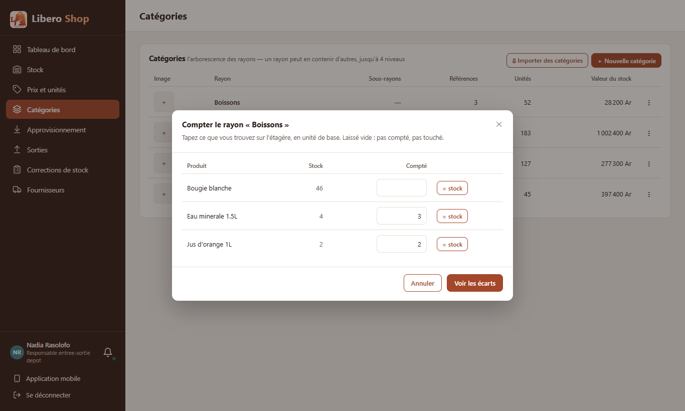
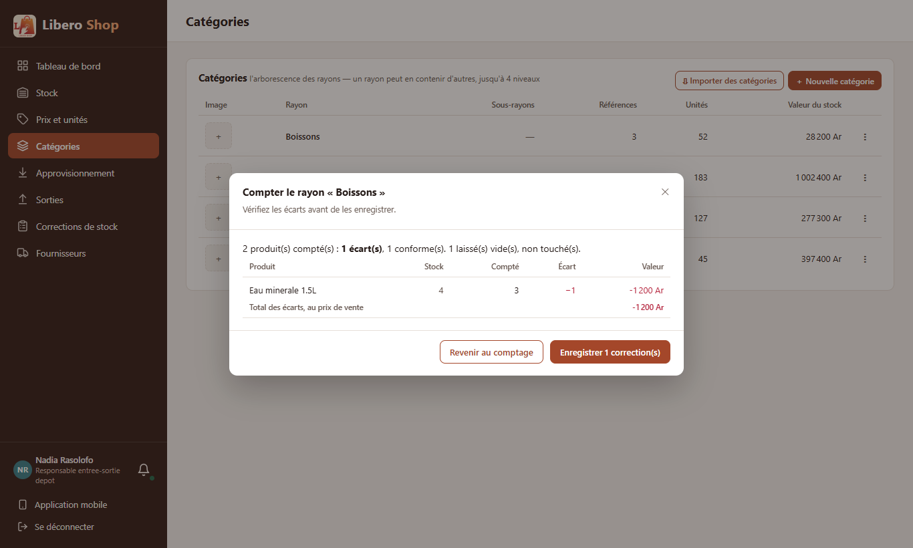

← Tous les comptes rendus de l'interface
UI-36Inventaire d'un rayon
- Dans le « ⋮ » d'un rayon, « Compter ce rayon » ouvre la liste de ses produits avec une case « Compté » et un bouton « = stock ».
- « Voir les écarts » résume avant d'écrire : produits comptés, écarts (en quantité et en ariary), produits conformes, produits laissés vides.
- À l'enregistrement, une correction « Inventaire du rayon Boissons » par produit trouvé différent ; tout ou rien.
- Un produit laissé vide n'est pas touché : on peut compter un rayon en partie.
1. Le problème
Pour inventorier un rayon de vingt produits, il fallait ouvrir vingt fois « Compter ce produit », sans vue d'ensemble des écarts avant de les enregistrer.
2. Ce qui a été fait
Côté serveur, POST /api/stock/inventories reçoit les produits comptés. Chaque produit trouvé différent
passe par la même règle qu'un comptage seul (« Inventaire »), dans une seule transaction : si un produit est refusé
(supprimé entre-temps, compté deux fois), aucune correction n'est écrite et le comptage reste à l'écran. Les produits
trouvés conformes ne créent aucune ligne d'historique. La valeur des écarts est donnée au prix de vente, pour mesurer
l'importance d'un écart avant de valider.
3. Le résultat en images
Nadia — responsable de dépôt


4. Tableau récapitulatif
| Fichier | Changement |
|---|---|
backend/…/service/InventoryService.java | nouveau : un rayon compté, une correction par écart, tout ou rien |
backend/…/web/StockController.java, web/dto/CreateInventoryRequest.java | POST /api/stock/inventories |
ui/…/core/stock/inventory.ts | nouveau : lecture des comptes, résumé des écarts |
ui/…/features/depot-manager/rayon-count-dialog.component.ts | nouveau : la fenêtre en deux étapes |
ui/…/features/depot-manager/categories.component.ts | « Compter ce rayon » dans le menu (pour qui peut corriger le stock) |
| Règle | Test |
|---|---|
| Seul le produit différent est corrigé, au nom du rayon | InventoryServiceTest |
| Une ligne refusée : rien n'est écrit | |
| Un produit compté deux fois : refusé | |
| Un rayon trouvé vide se compte à zéro | |
| Vide = pas compté, zéro = compté ; écarts chiffrés ; comptes illisibles signalés | inventory.spec.ts |
Tests : serveur au vert (635 tests), interface au vert (307 tests).